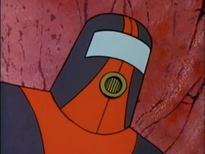
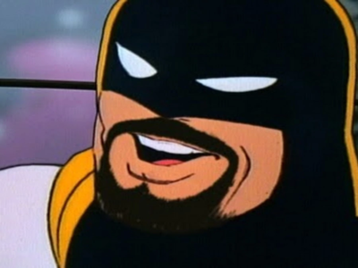

Space Ghost, cujo nome verdadeiro é Tad Eustace Ghostal, foi um super-herói nos anos 60. Embora às vezes em conflito sobre se salvar o mundo ou apresentar um talk show é o que é melhor para ele, Tad realmente deseja apresentar o melhor talk show se puder. Infelizmente, suas falhas tendem a tirar o melhor dele. Ele é infantil, egoísta e mesquinho, e geralmente permanece alheio ao que o cerca. Ele tem pouca consideração pelo bem-estar dos outros e muitas vezes rebaixa seus companheiros e convidados.
Brak
Brak é um adolescente alienígena parecido com um gato com grandes presas que, embora seja um vilão, é o menos ameaçador do programa. Ele aparecia periodicamente, muitas vezes com o Conselho da Perdição, do qual era membro, e muitas vezes era alvejado pelo Space Ghost ou outros vilões. Brak sequestrou o show uma vez no episódio "Jerk", querendo que o público o saudasse, fazendo a introdução e até mesmo a música para o constrangimento de Ghost. Ele co-apresentou o Cartoon Planet e seu renascimento com Zorak.
Lokar
Dublado por Andy Merrill, Lokar é um gafanhoto hominídeo erudito e gigante que está sujeito a explosões violentas e fala em uma voz britânica. Lokar parece guardar rancor em relação ao Space Ghost, e constantemente busca sua destruição, talvez mais por sua grosseria do que qualquer outra coisa. Ele também está em uma rivalidade de longa data com Zorak. Lokar é um membro do Conselho da Perdição, embora ele não seja tão mau quanto um esnobe. O episódio "Pilot" revelou que ele originalmente seria o líder da banda do show ao invés de Zorak, mas Zorak foi contratado quando Birdman, tendo sido continuamente insultado por Lokar, teve seu falcão Vingador o atacando, algo que o hospitalizou.

Moltar
Moltar é o diretor e produtor do show. Seu corpo é feito inteiramente de lava, e ele normalmente usa uma roupa de contenção de corpo inteiro laranja e cinza com um receptáculo de respiração. De longe o personagem mais competente e sensato, Moltar às vezes tende a ser mais inteligente do que parece. Ele tende a ser muito amigo de Zorak, embora Zorak não tenha os mesmos sentimentos por ele. Ele é um grande fã de CHiPs e de sua estrela, Erik Estrada. Moltar fez uma breve aparição no Cartoon Planet, onde ele, Zorak e Brak entraram em uma briga até que Space Ghost mandou ele e Zorak para seus quartos..
Zorak
Zorak Roberts é o líder da banda e um alienígena parecido com um louva-a-deus, conhecido por seu ódio pelo Space Ghost. Extremamente mau, uma vez ele comeu seu próprio sobrinho. Ele é virgem, em grande parte devido ao fato de não desejar ser comido por sua companheira após a relação sexual, como é normal para os louva-a-deus. Ele não tem remorso, não sente pena e age apenas para atingir seus próprios fins. Ele é o melhor amigo de Brak, mas tem pouco respeito por ele. Embora prisioneiro do Space Ghost, Zorak continua sendo membro do Conselho da Perdição. Ele afirma que é um gafanhoto ou um louva-a-deus, mas frequentemente muda de ideia.

Chad
Chad Ghostal é o irmão gêmeo malvado do Space Ghost, que se distingue do Space Ghost na aparência física apenas por uma barba de Van Dyke mal desenhada. Ele é um beatnik, com um amor por jazz e gírias beatniks ultrapassadas, e é extremamente malvado. Ele também é famoso com as mulheres. Chad é mencionado pela primeira vez no episódio ‘Jerk’, onde ele liga para o show para dizer ao Space Ghost que ele escapou do hospicio e estará lá em breve. Primeira aparição do Chad na tela está em “Switcheroo”, onde ele usa a sua semelhança com Space Ghost para trocar de lugar com ele, e novamente em ' Hipster ', onde ele assume o show após Space Ghost ficar incapacitado.